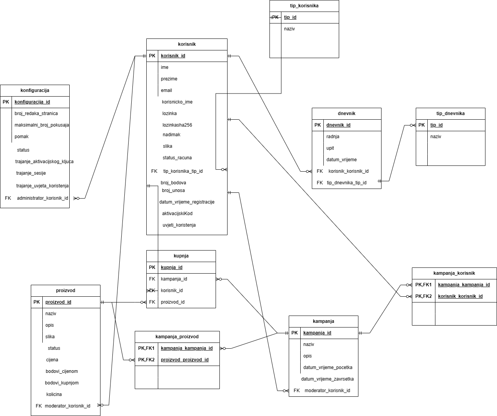
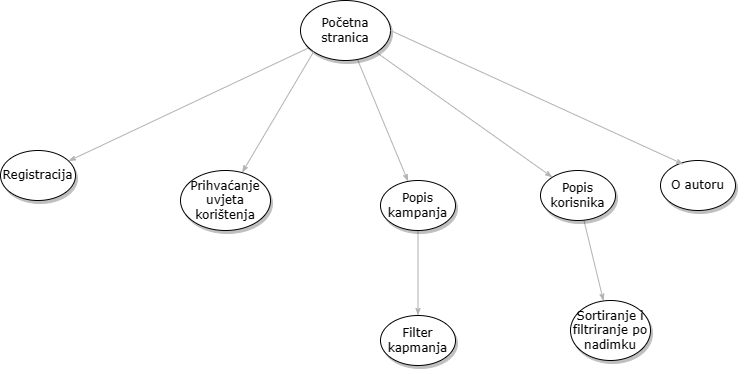
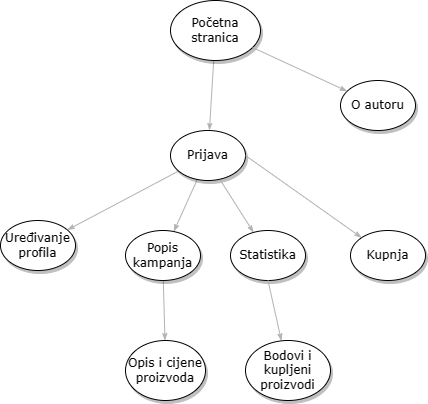
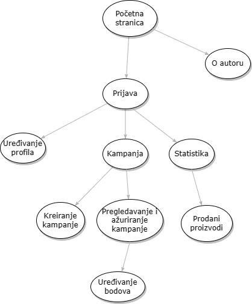
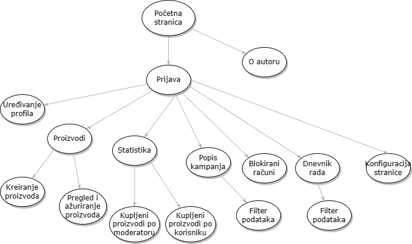

Promocija proizvoda Kratak opis projekta: Sustav služi za upravljanje marketinškom kampanjom proizvoda.
ERA
Navigacijski
Neregistrirani
Registrirani
Moderator
Administrator
U početnom folderu imamo index.php odnosno početnu stranicu i stranicu o autoru.
Zatim imamo folder admin gdje se nalaze adminove postavke,
stranica admin.php sadrži postavke admina koje može promjeniti i statistiku dnevnika (preko tipDnevnika.php dohvaćamo podatke za graf).
Datoteke ukljuciVirtualno.php i iskljuciVirtualno.php sadrže kod koji dohvaća pomak virtualnog vremena.
Datoteka proizvodstatistika.php služi za unos (preko noviProizvod.php) i uređivanje (preko urediProizvod.php) proizvoda.
Folder autentifikacija sadrži registracija.php što služi za registraciju i prijavu korisnika, ali funkcije prijave i registracije sam stavio pod privatno/baza.class.php.
Datoteka provjera_korisnickog_imena služi za provjeru korisničkog imena preko AJAX-a.
Folder css ima datoteku pmartinov.css za uređivanje stranice.
Folder javascript ima pmartinov.js gdje sam radio provjeru na strani poslužitelja.
Folder korisnik ima profil.php koji sadrži podatke o korisniku. Datoteka proizvodi.php služi za pregled kampanja i kupovinu proizvoda.
Folder moderator ima stranicu statistika.php gdje imamo statistiku kupljeni proizvoda po kampanji i grafički prikaz preko javascripta uz pomoć phpStatistika.php gdje dohvaćamo podatke iz baze.
Datoteka kampanja.php služi za pregled svoje kampanje i dodavanje novih proizvoda u kampanju, dodavanje nove kampanje i uređivanje postojeći proizvoda.
Folder multimedija služi za pohranu slika.
Pod ostalo imamo popis.php gdje imamo popis kampanja i korisnika s mogućnosti sortiranja.
Folder privatno sadrži potrebne php datoteke.
Tehnologije koje sam koristio su: XAMPP, Apache, Putty, FileZilla.